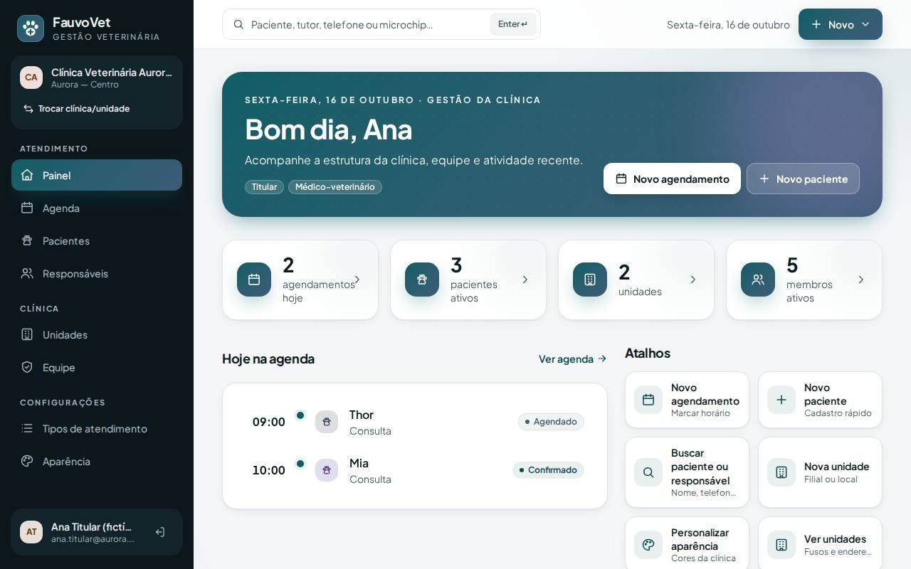
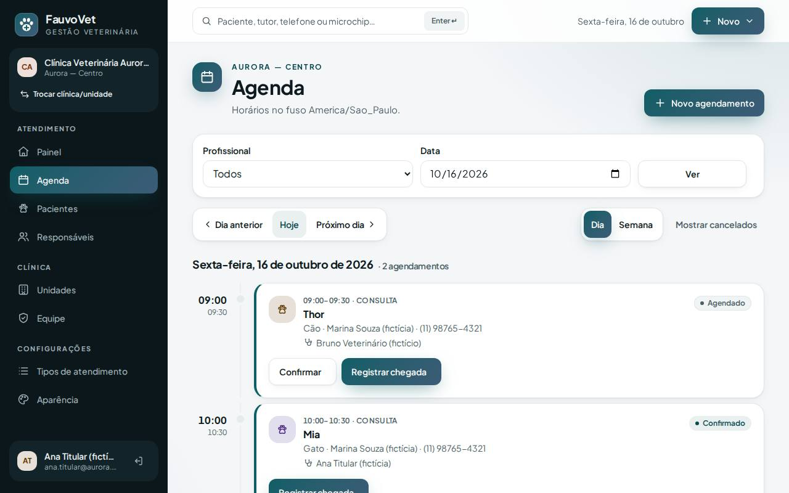
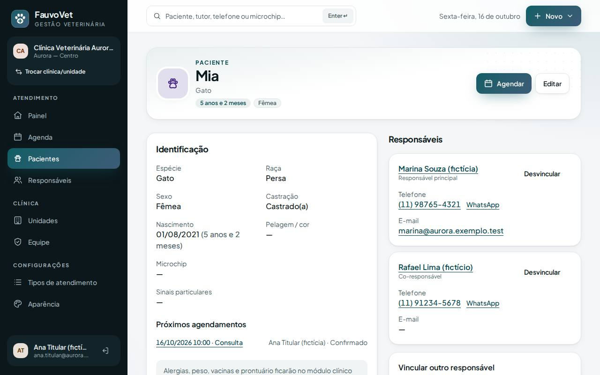
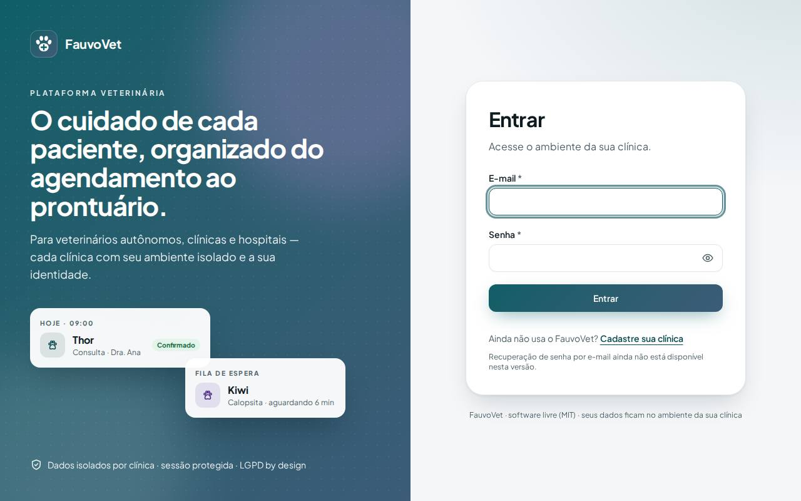
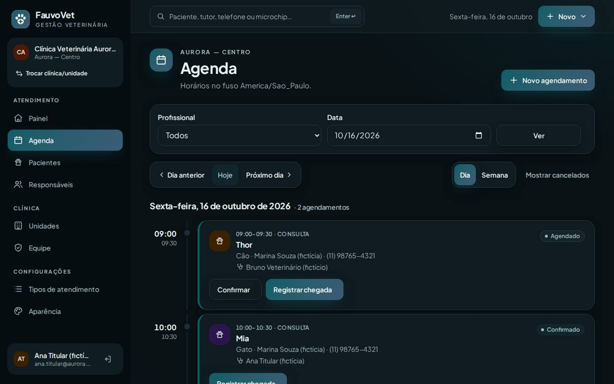
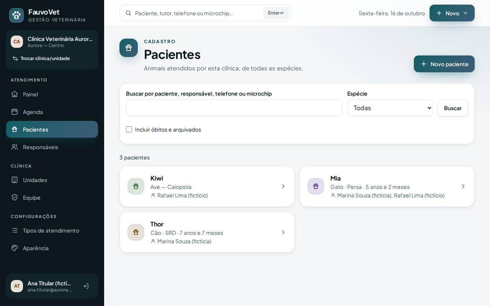
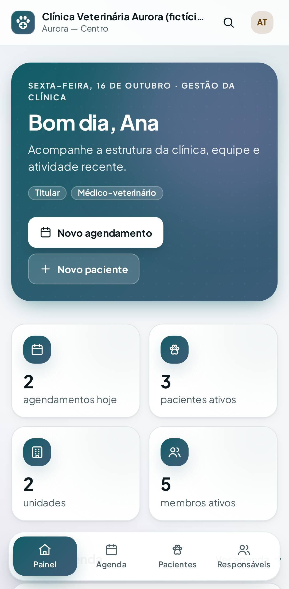
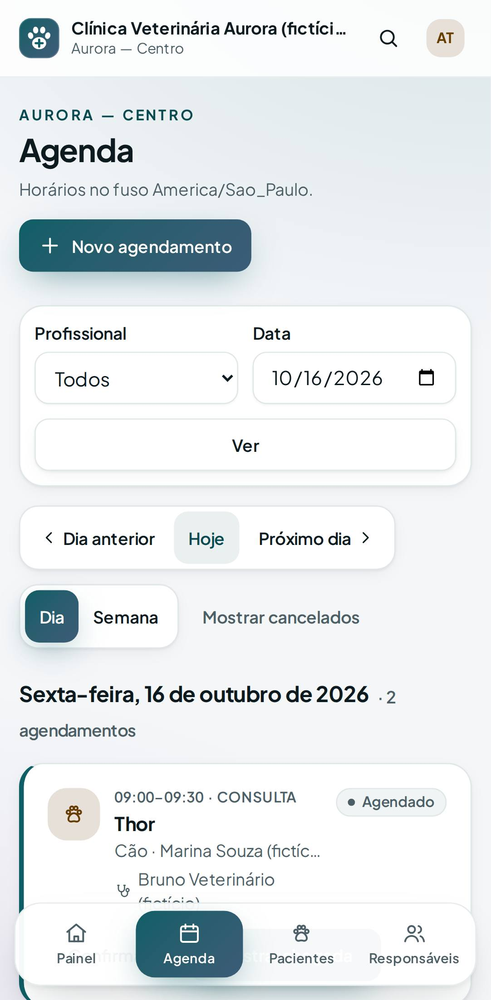

Novo visual do FauvoVet: moderno, vivo e com a identidade de cada clínica
ID: 2026-10-16-redesign-visual · Data: 16/10/2026 · Versão: 0.5.1 · Módulo: §7 UX/UI · Estado: implementado e testado localmente; publicação a cargo do proprietário (seção 7)
1. Objetivo
O proprietário achou as telas "sem vida, muito simples, muito quadradas". Esta entrega muda só o design: nenhuma regra, permissão, tabela ou dado foi alterado. O objetivo é uma aparência de software premium de saúde, com a cor de cada clínica presente na interface toda, sem perder acessibilidade (WCAG AA), velocidade e uso confortável no celular.








Capturas com dados 100% fictícios do seed de desenvolvimento.
2. O que mudou
Linguagem visual (ADR-012)
- Tipografia: fonte Plus Jakarta Sans (licença OFL), servida pelo próprio sistema, sem Google Fonts nem CDN. Títulos maiores e mais firmes.
- Cores da clínica em toda a interface:
- degradês, brilhos e realces são calculados a partir das duas cores escolhidas em Aparência;
- trocar a cor da clínica muda botões, menu ativo, faixa do painel, ícones e logo.
- Superfícies: fundo com "malha" suave nas cores da clínica, cartões com cantos mais arredondados e sombras em camadas. Cartões clicáveis sobem levemente ao passar o mouse. Barras superiores translúcidas.
- Avatares: iniciais coloridas para pessoas e clínicas; para pacientes, ícone com cor por grupo de espécie (cão, gato, ave, réptil…). São 8 tons, todos com contraste AA, no claro e no escuro.
- Status com ponto colorido: "Aguardando" pulsa suavemente; "Em atendimento" usa o degradê da clínica.
- Movimento: entradas suaves de 0,45 s. Quem ativa "reduzir movimento" no sistema operacional não vê animações.
- Modo escuro refeito com os mesmos tokens.
Estrutura
- Menu lateral escuro (computador), em grupos: Atendimento (Painel, Agenda, Pacientes, Responsáveis), Clínica (Unidades, Equipe) e Configurações (Tipos de atendimento, Aparência). Também mostra o cartão da clínica, com "Trocar clínica/unidade", e o usuário com o botão de sair.
- Barra superior (computador):
- busca rápida de paciente, tutor, telefone ou microchip;
- data de hoje;
- botão Novo com Novo agendamento, Novo paciente e Novo responsável.
- Celular:
- barra inferior flutuante, com o item ativo em degradê;
- no topo, lupa (vai para Pacientes) e avatar (abre o menu da conta);
- o menu da conta traz atalhos de criação e "Mais opções".
- Painel: faixa de boas-vindas em degradê (data, papéis, botões principais), 4 indicadores com ícone (2 por linha no celular), "Hoje na agenda" em linha do tempo, atalhos em blocos e atividade recente com ícones e "há X minutos".
- Agenda: visão de dia como linha do tempo (hora à esquerda, trilho e cartão com avatar da espécie); filtros num cartão (compacto no celular); navegação e Dia/Semana em botões segmentados; semana com o dia de hoje em destaque e dias vazios marcados "Livre".
- Fichas (paciente, responsável, agendamento, membro, unidade): novo cabeçalho de perfil com avatar grande e etiquetas (idade, sexo, microchip, nº de pacientes, status).
- Listas: pacientes em grade de 2 colunas no computador; responsáveis, equipe e unidades com avatar e seta.
- Login: painel em degradê com brilhos animados e uma prévia ilustrativa do produto (decorativa, fictícia, ignorada por leitores de tela); formulário num cartão.
- Telas de erro (404, 419, 500…) em cartão central, com o número em degradê.
Defeitos encontrados e corrigidos durante a entrega
- Fonte não carregava em
/fauvovet: o CSS apontava para/build/…na raiz do domínio. O Vite agora usabase: './'(endereços relativos). O defeito afetaria a produção. - Rolagem lateral no celular:
- e-mails longos no painel do link de convite alargavam a página;
- os cartões de paciente não encolhiam na grade.
overflow-x: clipe coluna única de grade. Foi achado por um teste E2E que errava o clique por causa do deslocamento. - Espaço entre palavras curto na fonte nova: leve acréscimo de
word-spacing.
Arquivos
- Estilo e build:
resources/css/app.css(tokens novos, malha, vidro, tons, animações),vite.config.js,package.json(@fontsource-variable/plus-jakarta-sans). - Componentes:
button,card,badge,page-header,alert,empty-state,field,select,textarea,logo,icon(+14 ícones) e os novosavatar,stat,profile-header. - Telas:
layouts/app,layouts/auth,layouts/partials/context,dashboard,agenda/*,patients/*,guardians/*,team/*,units/*,settings/*,auth/context,errors/*. - PHP: só
App\Support\Species::tone()(cor do avatar por espécie). - Testes: o axe passa a medir o estado final (animação reduzida) e lista cada elemento reprovado com as cores. Dois testes E2E ajustados à nova interface.
Dependência nova: @fontsource-variable/plus-jakarta-sans 5.3.0 (OFL-1.1, só no build; vai para o servidor como arquivos .woff2).
3. Pré-requisitos
Os mesmos das entregas anteriores. Rode pnpm install (ou pnpm bootstrap) para baixar a fonte. Não há variável de ambiente nem migração nova.
Git Bash/macOS: NOT RUN.
4. Passo a passo (no seu computador)
cd ~/code/fauvovet→git pull --ff-only→pnpm installpnpm db:start→pnpm dev- Abra
http://127.0.0.1:8000/fauvovet/logine entre comana.titular@aurora.exemplo.test.
5. Como testar
Automático
pnpm verify --e2eManual
- Percorra Painel, Agenda (Dia e Semana), Pacientes, uma ficha, Responsáveis, Equipe, Unidades e Aparência, no computador e no celular.
- Em Aparência, troque a cor primária (ex.:
#1d4e89): menu, botões, faixa do painel e logo mudam juntos. - Mude o modo para Escuro e confira a legibilidade.
- No celular: barra inferior, lupa no topo e menu da conta pelo avatar. Nenhuma tela deve rolar para o lado.
- No sistema operacional, ative "reduzir movimento": as animações somem.
6. Performance e usabilidade
| Medida | Antes | Depois |
|---|---|---|
| Transferido na 1ª visita (login/painel) | ~98 KB | ~149 KB (a fonte fica em cache nas visitas seguintes) |
| LCP de laboratório (desktop / celular) | — | ≤ 120 ms / ≤ 100 ms |
| CLS | 0 | 0 a 0,006 (troca de fonte; bem abaixo de 0,1) |
| p95 servidor: painel · agenda dia · pacientes | 47,8 · 49,6 · 36,8 ms | 53,7 · 54,9 · 38,3 ms |
| CSS (gzip) | — | 9,6 KB |
Acessibilidade: o axe (WCAG 2.2 AA) não acusou violações em todas as telas cobertas, no computador e no celular, nos modos claro e escuro. Áreas de toque continuam com no mínimo 44 px. Rolagem lateral verificada em 16 telas no celular: nenhuma.
7. Implantação na Locaweb (sem migração)
Não há mudança no banco. Ainda assim é preciso rodar o otimizar, para o servidor recompilar as telas, porque o cache antigo mostraria o visual anterior.
- Terminal:
cd ~/code/fauvovet→git pull --ff-only→pnpm install→pnpm db:start→pnpm verify --e2e→pnpm deploy:package→pnpm deploy:copiar - Terminal:
pnpm deploy:token(guarde o TOKEN e copie a linhaDEPLOY_TOKEN_SHA256=…). - FileZilla: em
/app-fauvovet/.env,DEPLOY_TOOLS_ENABLED=true+ linha nova do token → enviar de volta → apagarbootstrap/cache/config.php(se existir). - FileZilla:
C:\fauvovet-deploy\app-fauvovet→/app-fauvovet, tudo excetostorage, com Sobrescrever. - FileZilla:
C:\fauvovet-deploy\public_html\fauvovet→/public_html/fauvovet, tudo com Sobrescrever. A pastabuild/assetsagora traz arquivos.woff2(a fonte). - Terminal (sem HTTPS:
http+export FAUVOVET_ALLOW_HTTP=1):
Não é preciso rodar "migrar" nesta versão.export FAUVOVET_DEPLOY_TOKEN='TOKEN_NOVO' pnpm deploy:remote https://dradeboragaldino.com.br/fauvovet diagnostico # pending_migrations: 0 pnpm deploy:remote https://dradeboragaldino.com.br/fauvovet otimizar # tudo 0 - FileZilla:
DEPLOY_TOOLS_ENABLED=false→ enviar de volta → apagarbootstrap/cache/config.php. - Terminal:
SMOKE_URL=https://dradeboragaldino.com.br/fauvovet pnpm smoke(5 PASS) →unset FAUVOVET_DEPLOY_TOKEN FAUVOVET_ALLOW_HTTP - Navegador: abra o sistema e aperte Ctrl+F5 uma vez para não usar o visual antigo em cache. Confira se a fonte nova aparece (letras mais arredondadas).
8. Rollback
- Código: reenvie o pacote anterior (
.deploy/fauvovet-8f91a50, a versão da agenda) e rode o otimizar de novo (com as ferramentas ligadas), para recompilar as telas antigas. Como não há mudança de banco, a volta é completa e sem perda de dados. - Local:
git revertdo commit desta entrega.
9. Troubleshooting
| Sintoma | Causa e solução |
|---|---|
| Visual antigo depois de publicar | Cache de telas no servidor (rode o otimizar) ou cache do navegador (Ctrl+F5). |
| Fonte "comum" em vez da nova | A pasta build/assets não foi enviada por completo (faltam os .woff2). Reenvie public_html/fauvovet/build. |
| Página sem cores ou estilo | build/ não enviada ou APP_URL errado. Veja a seção 9 do tutorial. |
| Cores estranhas depois de mudar a Aparência | A interface usa as duas cores da clínica. Escolha uma primária mais escura para ter um degradê mais sóbrio. |
10. Evidências e status
| Verificação | Status | Detalhe |
|---|---|---|
pnpm verify --e2e | PASS | 9/9 etapas; PHPUnit 100/100; E2E 47 + 1 ignorado de propósito |
| Acessibilidade axe (claro/escuro, desktop/celular) | PASS | sem violações, medido no estado final |
| Rolagem lateral no celular (16 telas) | PASS | nenhuma, depois das correções |
Fonte servida em /fauvovet | PASS | URLs relativas no CSS (./plus-jakarta-sans-…woff2) |
| Publicação desta versão | NOT RUN | A cargo do proprietário (seção 7) |
Commit: registrado no docs/PROGRESS.md após a sincronização.
Próximo passo: retomar o roadmap com o atendimento/prontuário, já no novo visual.